Alexandre Giuliani - Spectroscopy and Spectrometry
Home
Welcome to my page.
Currently employed as a research engineer at INRA (Institut National de la Recherche Agronomique), I am on secondment at the SOLEIL synchrotron radiation facility, near Paris (France) where I am working on the DISCO beamline as a beamline scientist.
SOLEIL is a very large research infrastructure and provides the scientific community with an access to 28 beamlines delivering photon beams of high brilliance and stability over a wide wavelength range from the terahertz up to the hard X-rays. The DISCO beamline, managed by Matthieu Refrregiers, makes use of visible, ultraviolet (UV) and vacuum-UV (VUV) photons on three experimental stations, namely fluorescence imaging, circular dichroism and the atmospheric pressure experimental (APEX) station. I am more specifically in charge of this last station.
In addition, I am a member of a team of INRA researchers on secondment at SOLEIL. Our mission is to help researchers and engineers from INRA to access the facility. We help improving proposals submitted by INRA researchers. In addition, we are visiting INRA centers across the country to present SOLEIL and its capabilities. We also maintain a monitoring of the technological developments appearing on synchrotron facilities.
I picked an xyz domain name because it reminds me the file format. The .xyz format is used to store chemical structures 1. The nature and the cartesian coordinates of the atoms are indicated in a very compact format.
Research
My research is concerned with the study of the electronic structure of ions and molecules. The electronic structure how describes the electrons of a system are distributed spatially and energetically. Geometric and electronic structures are intimately related and both structures are essential to the understanding of the chemical and physical properties of matter at an atomic and molecular scale. My various area of interest are therefore related to structure, such as:
Interplay between electronic and atomic structures of biological molecules
Understanding non-covalent interactions
Structural chemistry of bioorganic molecules using combination of spectroscopy and mass spectrometry
To achieve these endeavors, we have developed a series of tools.
Tools
New ion activation methods for tandem mass spectrometry
Mass spectrometry holds an important place in structural chemistry. A typical mass spectrometer is composed of an ion source, a mass to charge ratio (m/z) analyzer and an ion detector. Thus, a mass spectrum is a representation of the ion abundance as measured by the detector as a function of the m/z ratio, as illustrated in below. Molar masses and stoechiometries may be determined from mass spectra. The addition of another mass filtering stage, either in space or in time, allows a specific m/z range, corresponding to a species of interest, to be selected and activated. During the activation step, ions receives internal energy, which ultimately leads to the fragmentation of the ion. This method is termed tandem mass spectrometry or MS/MS. When fragment ions are selected and activated in multiple successive steps, the process is referred to as MSn 2.
The mean of activation in tandem MS is crucial as it determines to a large extend the outcomes of the process. The most used method, referred to as collision induced dissociation (CID), is based on inelastic collisions between the targets and an inert gas. CID belongs to the slow heating class of methods in which the internal energy of the ions is gradually increased until a dissociation threshold is reached. Hence, CID activation leads principally to the dissociation of the weakest bonds. This characteristic prevent some systems to be analyzed by CID: such as those bearing labile groups or non-covalent assemblies. Gaining some control over the fragmentation phenomenon is therefore very appealing.
The study of the spectroscopic properties of bioorganic ions in the gas phase,
Ion Spectroscopy
Spectroscopy of ions is not a trivial task. Indeed, it requires to confine high densities of charged particles within small volumes, during long enough period of time and the use of high brilliance photon sources. Usually, ion spectroscopy is performed using merged beams setups, such as the MAIA experiment at SOLEIL, in which large ionic currents are produced by ECR sources. The ion beam is then merged with monochromatic photons from the beamlines over ~1 m distance. These setups have the great advantage to provide absolute cross section measurements, but suffer from the restriction of the targets, mostly atomic, that can be ionized by ECR sources. In another concept, ion spectroscopy was performed in ion traps, in which the lower ionic target density produced by the classical ion sources was compensated by the ability to confine the ion longer, leading to very long irradiation times. This concept had been successfully implemented at Free Electron Lasers for infrared multiphoton dissociation spectroscopy, such as at CLIO or at FELIX but also using tunable laboratory lasers in the visible-UV range. However, synchrotron radiation, which is orders of magnitude less powerful than lasers, had so far not been used for ionization of trapped ions.
I had the chance to participate to the proof of the concept of the use of synchrotron radiation to perform ion spectroscopy on stored ions in traps. In this work 3, performed at Elletra in 2008 [PRL 2008], the photoionization of the xenon radical cation was measured in the XUV and compared to measurement from the merged beams experiments. It appeared that ion trap measurements were not affected by the presence of metastable species, which was the case with the merged beams data.
Thank to a grant from the French national funding agency in 2009, we have coupled an ion trap mass spectrometer with the UV and VUV beamlines DESIRS and DISCO [J. Synchrotron Rad. 2011] and later with the soft X-rays PLEIADES beamline at SOLEIL.
This setup takes profit from the potential of modern API sources such electrospray (ES), nano electrospray (NSI) or atmospheric pressure photoionization (APPI) to place in the gas phase systems which would be hardly possible to vaporize otherwise 4. Hence it is possible to probe the spectroscopy and dynamic of a wide variety of targets isolated in the gas phase by action spectroscopy. Ions of interest produced by the source are selected and accumulated in the ion trap until the desired capacity is reached. The radiation is then admitted in the trap for a controlled amount of time, after which the trap is emptied and the products of the irradiation are analyzed. Repeating this process over a set of wavelength produces a set of tandem mass spectra leads to data such as 5
From these data, the abundance of a particular ion may be measured and plotted as a function of the photon energy, leading to relative cross section for the individual process at the origin of the ionic signal considered.
TODO X-ray oxidative foot printing
TODO Molecular spectroscopy in the UV and synchrotron radiation
- Synchrotron Radiation Circular Dichroism (SRCD)
- VUV absorption spectroscopy
Softwares
Igor Pro
I have been using Igor Pro from Wavemetrics since my diploma thesis (mémoire de licence) in Liège and I used to use it extensively for data treatment and to produce figures. I also use Igor for control and acquisition. Almost all my published data have been treated and produced in final form using Igor. My codes written in Igor will be soon available on Github and Igor Exchange.
Org-mode
Org-mode made me use emacs, a software which I could get into previously. I guessed I needed a sufficient incentive to overcome the barrier! Org-mode was that incentive. It changed drasticallt the way I worked. Org-mode 6 is originally a powerful tools for task management, projects planning, notes taking and writing documents. However, it offers a very useful way to literate programming 7. Gradually my data treatment shifts to org-mode and literate programming in conjunction with python and Julia.
Collaborations
Konrad Hinsen, Centre de Biophysique Moléculaire, CNRS, Orléans, France
Molecular simulations.
Aleksandar Milosavljevic, formerly at Institute of Physics, Belgrade now at the PLEIADES beamline, SOLEIL
Ion spectroscopy.
Laurent Nahon, Synchrotron SOLEIL
VUV spectroscopy.
Francis Canon, CSGA, INRA, Dijon, France
Non covalent complexes.
Regis Daniel, University of Evry, France
Protein Foot printing. Mass spectrometric analysis of sugars.
Denis Duflot, University of Lille, France
Electronic spectroscopy & ab initio electronic structure calculations
David Ropartz & Hélène Rognaux, INRA Nantes, France
Mass spectrometric analysis of sugar.
Martin R. Green, Waters, Manchester, UK.
Ion activation & instrumentation.
About me
CAREER
- Since 2006 Senior Research Engineer, CEPIA Department, INRA on secondment at SOLEIL synchrotron on the DISCO beamline..
- Since 2006 Beamline scientist, DISCO beamline with Dr. M. Refregiers, SOLEIL, Gif-sur-Yvette, France.
- 2006 - 2004 Postdoctoral fellowship with Pr. Olivier Laprévote, Mass spectrometry laboratory, ICSN, CNRS, France.
- 2004 - 1998 Assistant with Pr. Jacques Delwiche, Université de Liège, Belgium.
EDUCATION
- 2013 Habilitation to conduct research University Paris-Sud (FR), Faculty of Sciences. Spectroscopy of ions and molecules of biological interest using synchrotron radiation. Committee: A. Zehnhacker, E. Uggerud, E. De Pauw, O. Laprévote, P. Maitre, J. Delwiche.
- 2003 Doctoral degree. in Sciences University of Liège (BE) with Dr. M.-J. Hubin-Franskin, Obtained with the highest distinction and the congratulations of the jury. Furan and some selected derivatives. A valence shell spectroscopic study by photon and electron impact methods.
- 1998 Licence in Chemical Sciences University of Liège (BE) with Dr. M.-J. Hubin-Franskin.
PRODUCTION
- 103 Peer-reviewed publications
- 10 Conference proceedings
- 3 Patents
- 2 Book Chapters
- 37 Oral communications (18 invited)
- 18 Posters
- 1505 Citations
AWARDS
2005 Annual prize of the Royal Academy of Sciences, Letters and Fine Arts of Belgium, Section of Mathematics and Physics, Brussels, Belgium.
Today-2014 Qualification for university professorship CNU section 30 (dilute matter and optics) and 31 (theoretical, physical and analytical chemistry). This qualification is mandatory to apply for professorship positions in France.
STUDENTS MENTORSHIP
2018-2015 Thesis Director of Suzie Douix, University Paris-Saclay, France.
2012-2009 Supervision of two postdocs. Drs Milosavljevic and Canon are currently Assistant Professor at the Institute of Physics of Belgrade (Serbia) and Research Fellow at CGSA, INRA Dijon.
2009–2004 Scientific supervision of PhD students (Aicha Bagag, Julia Allegrand) and 1 Master student (Delphine Debois), University d'Evry Val-d'Essonne, France.
TEACHING ACTIVITIES
2015 Course on ambient ionization, youth club of the French mass spectrometry society, Montélimar, France.
2009 Course on photoionization at atmospheric pressure, youth club of the French company of mass spectrometry, Borzée, Belgium.
2004 - 1998 Lecturer (Assistant) in General Chemistry and Physical Chemistry courses, University of Liège (Belgium).
~120 teaching hours per year.
ORGANISATION OF SCIENTIFIC MEETINGS
05/06/2018 Chairperson of the Fundamentals: Photoionization and Photodissociation session at the Annual conference of the American Society for Mass Spectrometry, San Diego, USA.
21/01/2015 Organizing committee, INRA – SOLEIL meeting day as a satellite of the SOLEIL User’s meeting, around 80 participants, SOLEIL, Gif-sur-Yvette, France.
13/11/2009 Organizing committee, INRA – SOLEIL meeting day, around 40 participants, SOLEIL, Gif-sur-Yvette, France.
COMMISSIONS OF TRUST
Today - 2013 External evaluator for the CLS (Canadian Synchrotron Radiation Center), Canada.
2018, 2017 Expert for the Swiss NSF (National Science Foundation) Switzerland.
2016, 2013 Expert for the ANR (French National Agency for Scientific Research), France.
2016, 2013 Expert for the NCSTE (National Centre of Science and Technology Evaluation), Kazakhstan
2014 Expert for the European Commission in the framework of the H2020 program, Brussels.
EDITORSHIPS
Today – 2014 Editorial board member of the Journal of Chemistry (analytical chemistry division), Hindawi Publishers.
2017 Edition of a booklet (around 50 pages) to comemorate the 10 years partnership between INRA and SOLEIL.
2012 Edition of a booklet (around 80 pages) to comemorate the 5 years partnership between INRA and SOLEIL.
MEMBERSHIPS OF SCIENTIFIC SOCIETIES
2018 - 2017 Member of the French Chemical Society
2018 - 2017 Member of the French Society of Mass Spectrometry
2018 - 2005 Member of the American Society of Mass Spectrometry
2018 - 2006 Member of the thematic group of Biology and Life Science of the SOLEIL synchrotron
2018 - 2005 Member of the thematic group of atomic and molecular physics of the SOLEIL synchrotron
Scientific production
Publications , Proceedings, Patent, Book Chapters, Oral communications, Posters.
A list is available from my institution repository Prodinra along with some preprints.
Publications
2019
- 103. «Vacuum-UV induced DNA strand breaks – influence of the radiosensitizers 5-bromouracil and 8-bromoadenine» S. Vogel, K. Ebel, C. Heck, R. M. Schürmann, A. R. Milosavljević, A. Giuliani, Ilko Bald*, Phys. Chem. Chem. Phys. 2019 doi:10.1039/C8CP06813E

- 102. «Tuning photoionization mechanisms of molecular hybrid materials for EUV lithography applications» L. Wu, M. Tiekink, A. Giuliani, L. Nahon, S. Castellanos*, J. Mater. Chem. C 7 (2019) 33-37. doi:10.1039/C8TC05273E

2018
- 101. «Spectroscopy and Photodissociation of the Perfluorooctanoate Anion» S. Douix, H. Dossmann, E. Nicol, D. Duflot, A. Giuliani*, Chemistry – A European Journal 24 (2018) 15572 – 15576. doi:10.1002/chem.201801997

- 100. «Extreme ultraviolet (XUV) radiation: a means of ion activation for tandem mass spectrometry» A. Giuliani*, J. P. Williams, M. R. Green*, Anal. Chem. 90 (2018) 7176–7180. doi:10.1021/acs.analchem.8b01789

- 99. «Radical Anions of Oxidized vs. Reduced Oxytocin: Influence of Disulfide Bridges on CID and Vacuum UV Photo-Fragmentation» L. MacAleese*, M. Girod, L. Nahon, A. Giuliani, R. Antoine, P. Dugourd, J. Am. Soc. Mass Spectrom. 29 (2018) 1826-1834. doi:10.1007/s13361-018-1989-8

- 98. «Carotenoids: Experimental Ionization Energies and Capacity at Inhibiting Lipid Peroxidation in a Chemical Model of Dietary Oxidative Stress», P. Goupy, M. Carail, A. Giuliani, D. Duflot, O. Dangles*, C. Caris-Veyrat, J. Phys. Chem. B 122 (2018) 5860–5869. doi:10.1021/acs.jpcb.8b03447

- 97. «Photo-Induced Fragmentation of a Tin-Oxo Cage Compound» J. Haitjema, L. Wu, A. Giuliani, L. Nahon, S. Castellanos, A. M. Brouwer*, J. Photopolym. Sci. Technol. 31(2) (2018) 243–247. doi:10.2494/photopolymer.31.243

- 96. «MS/MS-Guided Isolation of Clarinoside, a New Anti-Inflammatory Pentalogin Derivative» C. Audoin, A. Zampalégré, N. Blanchet, A. Giuliani, E. Roulland, O. Laprévote, G. Genta-Jouve*, Molecules 23 (2018) 1237. doi:10.3390/molecules23051237
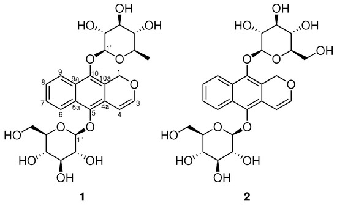
2017
- 95. «Photoionization of the Buckminsterfullerene Cation» S. Douix, D. Duflot, D. Cubaynes, J.-M. Bizau, A. Giuliani*, J. Phys. Chem. Lett. 8 (2016) 7-12. doi:10.1021/acs.jpclett.6b02558
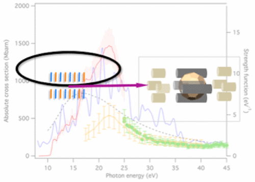
- 94. «Gas-Phase Structural and Optical Properties of Homo- and Heterobimetallic Rhombic Dodecahedral Nanoclusters [Ag14–nCun(C≡CtBu)12X]+ (X = Cl and Br): Ion Mobility, VUV and UV Spectroscopy, and DFT Calculations» S. Daly , C. M. Choi , A. Zavras, M. Krstić, F. Chirot , T. U. Connell, S. J. Williams , P. S. Donnelly, R. Antoine , A. Giuliani , V. Bonačić-Koutecký*, P. Dugourd*, R. A. J. O’Hair*, J. Phys. Chem. C, 121(20) (2017) 10719–10727. doi:10.1021/acs.jpcc.7b02663
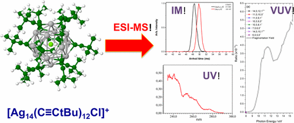
- 93. «Investigation of secondary structure evolution of micellar casein powder upon aging by FTIR and SRCD: consequences on solubility» S. Nasser, A. Hédoux, A. Giuliani, C. Le Floch-Fouéré, V. Santé-Lhoutellier, I. de Waele, G. Delaplace*, J. Sci. Food Agric. 98 (2017) 2243-2250. doi:10.1002/jsfa.8711

- 92. «Multiple electron capture from isolated protein poly-anions in collision with slow highly charged ions» A. R. Milosavljević*, P. Rousseau, A. Domaracka, B. A. Huber, A. Giuliani, Phys. Chem. Chem. Phys. 19 (2017)19691-19698. doi:10.1039/C7CP02075A

- 91. «Polyaromatic disordered carbon grains as carriers of the UV bump: Far-UV to mid-IR spectroscopy of laboratory analogs» L. Gavilan*, K.C. Le, T. Pino, I. Alata, A. Giuliani, E. Dartois, Astronomy & Astrophysics 607 (2017) A73. doi:10.1051/0004-6361/201730712

- 90. «SOLEIL shining on the solution-state structure of biomacromolecules by synchrotron X-ray footprinting at the Metrology beamline» A. Baud, L. Aymé, F. Gonnet, I. Salard, Y. Gohon, P. Jolivet, K. Brodolin, P. Da Silva, A. Giuliani, B. Sclavi, T. Chardot, P. Mercère, P. Roblin, R. Daniel*, J. Synchrotron Rad. 24 (2017) 576-585. doi:10.1107/S1600577517002478

- 89. «Structural proteomics: Topology and relative accessibility of plant lipid droplet associated proteins» P. Jolivet, L. Aymé, A. Giuliani, F. Wien, T. Chardot, Y. Gohon*, J. proteomics 169 (2017) 87-98. doi:10.1016/j.jprot.2017.09.005
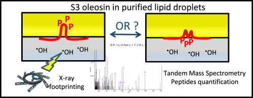
2016
- 88. «Charge Transfer Dissociation of Complex Oligosaccharides: Comparison with Collision-Induced Dissociation and Extreme Ultraviolet Dissociative Photoionization» D. Ropartz, P. Li, M. Fanuel, A. Giuliani, H. Rogniaux*, G.P. Jackson, J. Am. Soc. Mass Spectrom. 27 (2016) 1614-1619. doi:10.1007/s13361-016-1453-6

- 87. «Online coupling of high-resolution chromatography with extreme UV photon activation tandem mass spectrometry: Application to the structural investigation of complex glycans by dissociative photoionization» D. Ropartz*, A. Giuliani, M. Fanuel, C. Hervé, M. Czjzek, H. Rogniaux, Analytica Chim. Acta 933 (2016) 1-9. doi:10.1016/j.aca.2016.05.036
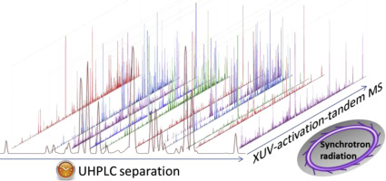
- 86. «Single-Photon, Double Photodetachment of Nickel Phthalocyanine Tetrasulfonic Acid 4- Anions» S. Daly, M. Girod, M. Vojkovic, A. Giuliani, R. Antoine, L. Nahon, R. A. J. O’Hair*, P. Dugourd*, J. Phys. Chem. Lett. 7 (2016) 2586-2590. doi:10.1021/acs.jpclett.6b01030
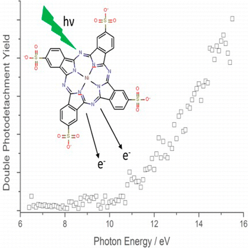
- 85. «Design and performance of an instrument for electron impact tandem mass spectrometry and action spectroscopy of mass/charge selected macromolecular ions stored in RF ion trap» M. Lj. Rankovic, A. Giuliani, A. R. Milosavljevic*, Eur. J. Phys. D 70 (2016) 125. doi:10.1140/epjd/e2016-70108-7

- 84. «Probing the solution structure of Factor H using hydroxyl radical protein footprinting and cross-linking» A. Baud, F. Gonnet, I. Salard, M. Le Mignon, A. Giuliani, P. Mercère, B. Sclavi, R. Daniel*, Biochemical Journal 473 (2016) 1805-1819. doi:10.1042/BCJ20160225

- 83. «VUV photo-processing of PAH cations: quantitative study on the ionization versus fragmentation processes» J. Zhen, S. Rodriguez Castillo, C. Joblin*, G. Mulas, H. Sabbah, A. Giuliani, L. Nahon, S. Martin, J.-P. Champeaux, P. M. Mayer, The Astrophysical Journal 822 (2016). doi:10.3847/0004-637X/822/2/113
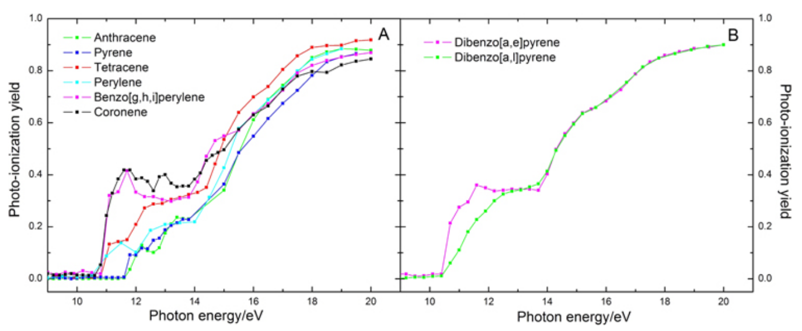
- 82. «Electron impact action spectroscopy of mass / charge selected macromolecular ions : Inner-shell excitation of ubiquitin protein Electron impact action spectroscopy of mass / charge selected macromolecular ions : Inner-shell excitation of ubiquitin protein» M. Lj. Rankovic, A. Giuliani*, A. R. Milosavljevic*, Appl. Phys. Lett. 108 (2016 ) 064101. doi:10.1063/1.4941798
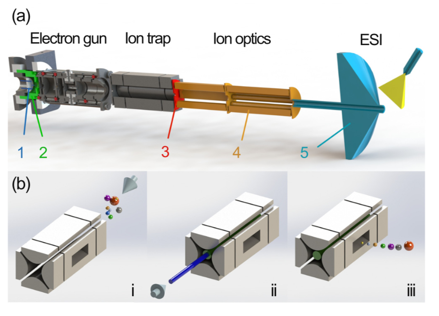
- 81. «VUV spectroscopy of carbon dust analogs: contribution to interstellar extinction» L. Gavilan*, I. Alata, K.C. Le, T. Pino, A. Giuliani, E Dartois, Astronomy and Astrophysics 586 (2015) A106. doi:10.1051/0004-6361/201527098
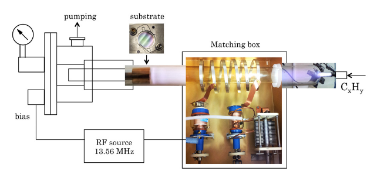
2015
- 80. «VUV action spectroscopy of protonated leucine-enkephalin peptide in the 6-14 eV range» M. Lj. Ranković, F. Canon, L. Nahon, A. Giuliani and A. R. Milosavljević*, J. Chem. Phys. 143 (2015 ) 244311. doi:10.1063/1.4939080

- 79. «Using DNA Origami Nanostructures to Determine Absolute Cross Sections for UV Photon-Induced DNA Strand Breakage» S. Vogel, J. Rackwitz, R. Schürmann, J. Prinz, A. R. Milosavljevic, M. Refregiers, A. Giuliani, I. Bald*, J. Phys. Chem. Lett. 6 (2015 ) 4589–4593. doi:10.1021/acs.jpclett.5b02238
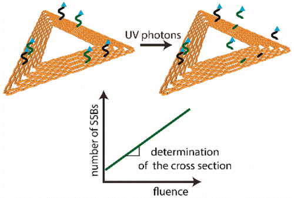
- 78. «K-Shell Excitation and Ionization of a Gas-Phase Protein: Interplay between Electronic Structure and Protein Folding» A. R. Milosavljević*, C. Nicolas, M. L. Ranković, F. Canon, C. Miron, and A. Giuliani, J. Phys. Chem. Lett. 6 (2015 ) 3132–3138. doi:10.1021/acs.jpclett.5b01288

- 77. «Gas-phase VUV Photoionisation and Photofragmentation of the Silver Deuteride Nanocluster [Ag10D8L6]2+ (L = bis(diphenylphosphino)methane). A Joint Experimental and Theoretical Study» S. Daly, M. Krstic, A. Giuliani, R. Antoine, L. Nahon, A. Zavras, G. N. Khairallah, V. Bonacic-Koutecky*, P. Dugourd*, R. A. J. O'Hair*, Phys. Chem. Chem. Phys. 17 (2015) 25772-25777. doi:10.1039/c5cp01160d

- 76. «Binding site of different tannins on a human salivary proline-rich protein evidenced by dissociative photoionization tandem mass spectrometry» F. Canon*, S. Ployon, J.-P. Mazauric, P. Sarni-Manchado, M. Réfrégiers, A. Giuliani, V. Cheynier, Tetrahedron 71 (2015) 3039-3044. doi:10.1016/j.tet.2014.11.013
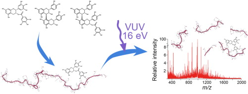
- 75. «Action spectroscopy of a protonated peptide in the ultraviolet range» F. Canon, A. R. Milosavljević, L. Nahon, A. Giuliani*, Phys. Chem. Chem. Phys. 39 (2015) 25725-25733 doi:10.1039/c4cp04762a

- 74. «X-ray-induced radiophotodynamic therapy (RPDT) using lanthanide micelles: Beyond depth limitations» S. Kaščáková, A. Giuliani, S. Lacerda, A. Pallier, P. Mercère, E. Tóth, M. Réfrégiers*, Nano Res. 8 (2015) 2373–9. doi:10.1007/s12274-015-0747-5
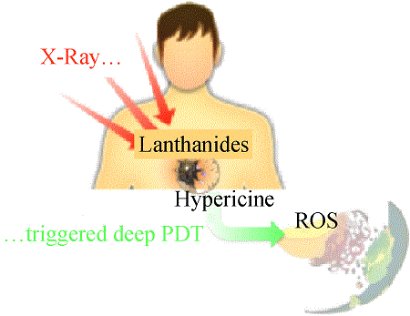
- 73. /«Exploring the peptide fragmentation mechanisms under atmospheric pressure photoionization using tunable VUV synchrotron radiation » / M. Méjean, A. Giuliani, A. Brunelle, D. Touboul*, Int. J. Mass Spectrom. 379 (2015) 80-86. doi:10.1016/j.ijms.2014.12.011

- 72. «High-energy photon activation tandem mass spectrometry provides unprecedented insights into the structure of highly sulfated oligosaccharides extracted from macroalgal cell walls» D. Ropartz, A. Giuliani, C. Hervé, A. Geairon, M. Jam, M. Czjzek, H. Rogniaux*, Anal. Chem. 87(2) (2015) 1042-1049. doi:10.1021/ac5036007
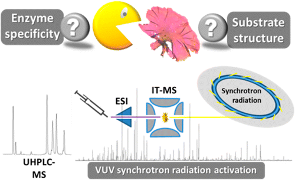
2014
- 71. «Determination of ionization energies of a monoterpene series by atmospheric pressure photoionization using tunable vacuum ultraviolet synchrotron radiation» M. Méjean, A. Giuliani, A. Brunelle, D. Touboul*, Eur. J. Mass Spectrom. 20 (2014) 403-407. doi:10.1255/ejms.1291

- 70. «X-ray induced fragmentation of size-selected salt cluster-ions stored in an ion trap» M. J. Ryding*, A. Giuliani, M. Patanen, J. Niskanen, G. Simões, G. B. S. Miller, E. Antonsson, T. Jokinen, C. Miron, O. Björneholm, K. Hansen, K. J. Børve, E. Uggerud*, RSC Advances 4 (2014) 47743-47751. doi:10.1039/c4ra09787d

- 69. «Energy-Dependent UV Photodissociation of Gas-Phase Adenosine Monophosphate Nucleotide Ions: The Role of a Single Solvent Molecule» A. R. Milosavljevic*, V. Z. Cerovski, F. Canon, M. L. Ranković, N. Škoro, L. Nahon, A. Giuliani, J. Phys. Chem. Lett. 5 (2014) 1994-1999. doi:10.1021/jz500696b
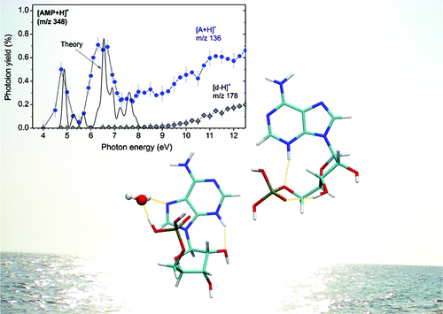
- 68. «Multiple Electron Ejection from Proteins Resulting from Single-Photon Excitation in the Valence Shell» R. Antoine*, Q. Enjalbert, L. MacAleese, P. Dugourd, A. Giuliani, L. Nahon, The Journal of Physical Chemistry Letters 5 (2014) 1666–1671. doi:10.1021/jz500489s

- 67. «VUV photofragmentation of protonated leucine-enkephalin peptide dimer below ionization energy» A. R. Milosavljević*, V. Z. Cerovski, M. L. Ranković, F. Canon, L. Nahon, A. Giuliani, The European Physical Journal D 68 (2014) 68. doi:10.1140/epjd/e2014-40826-y

- 66. «Contribution of Synchrotron Radiation to photoactivation studies of biomolecular ions in the gas phase» A. Giuliani*, A. R. Milosavljević, F. Canon, L. Nahon, Mass Spectrom. Rev. 33(6) (2014) 424-441. doi:10.1002/mas.21398

- 65. /«Synthetic oligomer analysis using atmospheric pressure photoionization mass spectrometry at different photon energies » / B. Desmazières, V. Legros, A. Giuliani, W. Buchmann*, Analytica Chim. Acta 808 (2014) 220–230. doi:10.1016/j.aca.2013.11.036
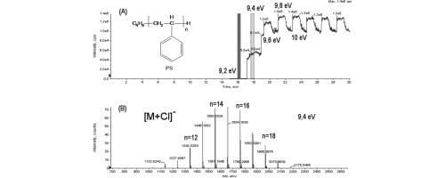
- 64. «Deciphering the structure of isomeric oligosaccharides in a complex mixture by tandem mass spectrometry: Photon activation with vacuum ultra-violet brings unique information and enables definitive structure assignment» D. Ropartz*, J. Lemoine, A. Giuliani, Y. Bittebière, Q. Enjalbert, R. Antoine, P. Dugourd, M. C. Ralet, H. Rogniaux, Analytica Chim. Acta 807 (2014) 84-95. doi:10.1016/j.aca.2013.11.018

2013
- 63. «Characterization of Hydrophobic Peptides in the Presence of Detergent by Photoionization Mass Spectrometry» A. Bagag, J.-M. Jault, N. Sidahmed-Adrar, M. Réfrégiers, A. Giuliani, F. Le Naour*, PLoS ONE 8 (2013) e79033. doi:10.1371/journal.pone.0079033

- 62. «Photodissociation and Dissociative Photoionization Mass Spectrometry of Proteins and Noncovalent Protein-Ligand Complexes» F. Canon, A. R. Milosavljević, G. van der Rest, M. Réfrégiers, L. Nahon, P. Sarni-Manchado, V. Cheynier, A. Giuliani*, Angew. Chem. Int. Ed. 52 (2013) 8377–81. doi:10.1002/anie.201304046

- 61. «Nanosolvation-Induced Stabilization of a Protonated Peptide Dimer Isolated in the Gas Phase» A. R. Milosavljević*, V. Z. Cerovski, F. Canon, L. Nahon and A. Giuliani*, Angew. Chem. Int. Ed. 52 (2013) 7286–90. doi:10.1002/anie.201301667
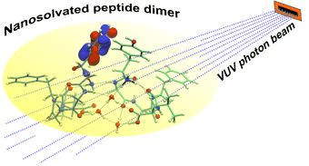
- 60. «Valence shell direct double photodetachment in polyanions» C. Brunet, R. Antoine, P. Dugourd, D. Duflot, F. Canon, A. Giuliani*, L. Nahon, New J. Phys. 15 (2013) 063024. doi:10.1088/1367-2630/15/6/063024

- 59. «Vacuum Ultraviolet Action Spectroscopy of Polysaccharides» Q. Enjalbert, C. Brunet, A. Vernier, A.-R. Allouche, R. Antoine*, P. Dugourd, J. Lemoine, A. Giuliani, L. Nahon, J. Am. Soc. Mass Spectrom. 24 (2013) 1271–9. doi:10.1007/s13361-013-0657-2
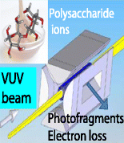
- 58. «VUV photochemistry simulation of planetary upper atmosphere using synchrotron radiation» N. Carrasco*, A. Giuliani*, J.-J. Correia, G. Cernogora, J. Synchrotron Rad. 20 (2013) 587–90. doi:10.1107/S0909049513013538
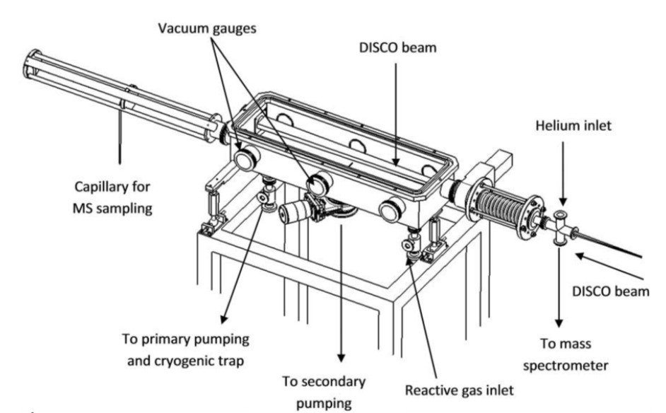
- 57. «Fold of an oleosin targeted to cellular oil bodies» J.-D. Vindigni, F. Wien, A. Giuliani, Z. Erpapazoglou, R. Tache, F. Jagic, T. Chardot, Y. Gohon, M. Froissard*, Biochim. Biophys. Acta 1828 (2013) 1881–8. doi:10.1016/j.bbamem.2013.04.009

- 56. «Titan's atmosphere simulation experiment using continuum UV-VUV synchrotron radiation» Z. Peng, T. Gautier, N. Carrasco*, P. Pernot, A. Giuliani*, A. Mahjoub, J.-J. Correia, A. Buch, Y. Bénilan, C. Szopa, G. Cernogora, J. Geograph. Res. Planets. 118 (2013) 778-788 doi:10.1002/jgre.20064
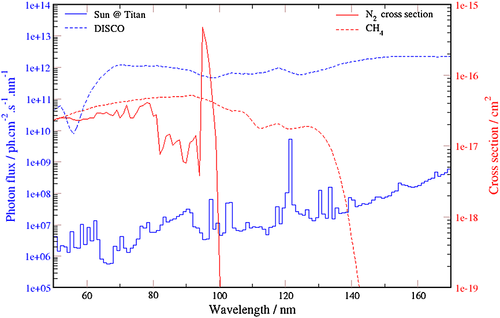
- 55. «Aggregation of the salivary proline-rich protein IB5 in presence of the tannin EgCG» F. Canon, F. Paté, V. Cheynier, P. Sarni-Manchado, A. Giuliani, J. Pérez, D. Durand, J. Li, B. Cabane*, Langmuir 29(6) (2103) 1926–1937. doi:10.1021/la3041715
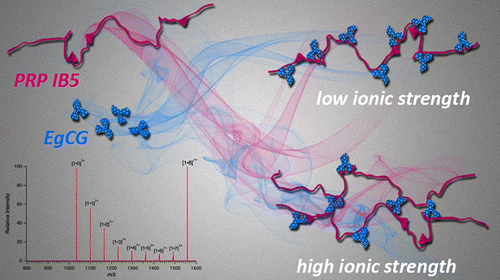
- 54. «Photo-induced electron detachment of protein polyanions in the VUV range» C. Brunet, R. Antoine*, P. Dugourd, F. Canon, A. Giuliani, L. Nahon, J. Chem. Phys. 138 (2013) 064301. doi:10.1063/1.4790165

2012
- 53. «Structure and Charge-State Dependence of the Gas-Phase Ionization Energy of Proteins» A. Giuliani*, A.R. Milosavljević, K. Hinsen, F. Canon, C. Nicolas, M. Réfrégiers, L. Nahon, Angew. Chem. Int. Ed. 51(38) (2012) 9552-9556. doi:10.1002/anie.201204435

- 52. «DISCO synchrotron-radiation circular-dichroism endstation at SOLEIL» M. Réfrégiers*, F. Wien, H.-P. Ta, L. Premvardhan, S. Bac, F. Jamme, V. Rouam, B. Lagarde, F. Polack, J.-L. Giorgetta, J.-P. Ricaud, M. Bordessoule, A. Giuliani, J. Synchrotron Rad., 19 (2012) 831-835. doi:10.1107/S0909049512030002

- 51. «Atmospheric pressure photoionization study of post-translational modifications: The case of palmitoylation» A. Bagag, A. Giuliani, M. Réfrégiers, F. Le Naour*, Int. J. Mass Spectrom. 328-329 (2012) 23-27. doi:10.1016/j.ijms.2012.07.021

- 50. «Atmospheric pressure photoionization mass spectrometry of guanine using tunable synchrotron VUV radiation» J. Allegrand, D. Touboul*, A. Giuliani, A. Brunelle, O. Laprévote, Int. J. Mass Spectrom. 321-322 (2012) 14–8. doi:10.1016/j.ijms.2012.05.009

- 49. «Atmospheric pressure photoionization using tunable VUV synchrotron radiation» A. Giuliani*, J.-L. Giorgetta, J.-P Ricaud, F. Jamme, V. Rouam, F. Wien, O. Laprévote, M. Réfrégiers, Nucl. Instrum. Methods Phys. Res. B, 279 (2012) 114-117. doi:10.1016/j.nimb.2011.10.038

- 48. «Fast in vacuo photon shutter for synchrotron radiation quadrupole ion trap tandem mass spectrometry» A.R. Milosavljević*, C. Nicolas, J.-F. Gil, F. Canon, M. Réfrégiers, L. Nahon, A. Giuliani, Nucl. Instrum. Methods Phys. Res. B, 279 (2012) 34-36. doi:10.1016/j.nimb.2011.10.032

- 47. «Mid- and far-infrared absorption spectroscopy of Titan’s aerosols analogues» T. Gautier*, N. Carrasco, A. Mahjoub, S. Vinatier, A. Giuliani, C. Szopa, C.M. Anderson, J.-J. Correia, P. Dumas, G. Cernogora, Icarus 221 (2012) 320–327. doi:10.1016/j.icarus.2012.07.025

- 46. «Gas-Phase Protein Inner-Shell Spectroscopy by Coupling an Ion Trap with a Soft X-ray Beamline» A. R. Milosavljević*, F. Canon, C. Nicolas, C. Miron, L. Nahon, A. Giuliani*. J. Phys. Chem. Lett., 3 (2012) 1191−1196. doi:10.1021/jz300324z

- 45. «VUV synchrotron radiation: a new activation technique for tandem mass spectrometry» A. R. Milosavljević, C. Nicolas, J.-F. Gil, F. Canon, M. Réfrégiers, L. Nahon, A. Giuliani*, J. Synchrotron Rad., 19 (2012) 174–178. doi:10.1107/S0909049512001057

- 44. «Formation and Fragmentation of Radical Peptide Anions: Insights from Vacuum Ultra Violet Spectroscopy» C. Brunet, R. Antoine*, P. Dugourd, F. Canon, A. Giuliani, L. Nahon, J. Am. Soc. Mass Spectrom. 23(2) (2012) 274-281. doi:10.1007/s13361-011-0285-7

2011
- 43. «Separation of peptides from detergents using ion mobility spectrometry» A. Bagag, A. Giuliani, F. Canon, M. Refregiers, F. Le Naour*, Rapid Commun. Mass Spectrom. 25 (2011) 3436-3440. doi:10.1002/rcm.5242
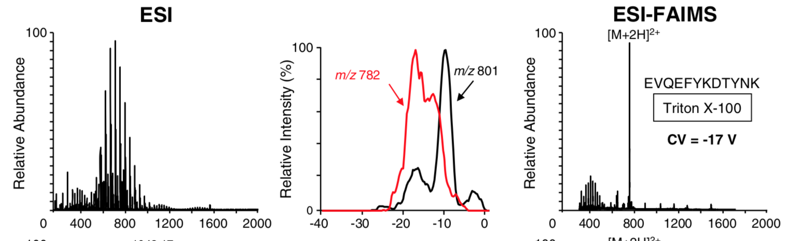
- 42. «Gas Phase Photo-Formation and Vacuum UV Photofragmentation Spectroscopy of Tryptophan and Tyrosine Radical Containing Peptides» C. Brunet, R. Antoine*, B.-R. Allouche, P. Dugourd, F. Canon, A. Giuliani, L. Nahon, J. Phys. Chem. A, 115 (2011) 8933-8939. doi:10.1021/jp205617x
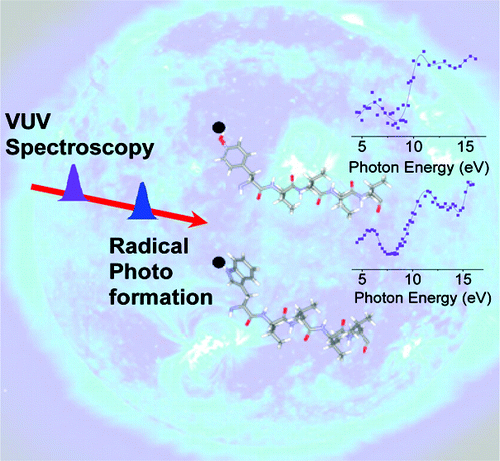
- 41. «A differential pumping system to deliver windowless VUV photons at atmospheric pressure» A. Giuliani*, I. Yao, B. Lagarde, S. Rey, J.-P. Duval, P. Rommeluere, F. Jamme, V. Rouam, F. Wien, C. De Oliveira, M. Ros, A. Lestrade, K. Desjardins, J.-L. Giorgetta, O. Laprévote, C. Herbaux, M. Réfrégiers, J. Synchrotron Rad. 18 (2011) 546–549. doi:10.1107/S0909049511016517
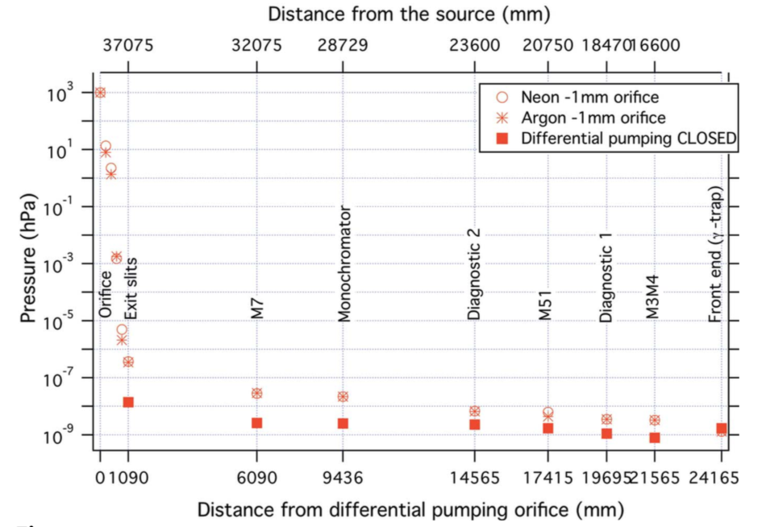
- 40. «Photoionization study of Kr+ and Xe+ ions with the combined use of a merged-beam set-up and an ion trap» J. M. Bizau*, C. Blancard, M. Coreno, D. Cubaynes, C. Dehon, N. El Hassan, F. Folkmann, M. F. Gharaibeh, A. Giuliani, J. Lemaire, A.R. Milosavljevic, C. Nicolas, R. Thissen, J. Phys. B. 44 (2011) 055205. doi:10.1088/0953-4075/44/5/055205

- 39. «High water solubility and fold in amphipols of proteins with large hydrophobic regions: oleosins and caleosin from seed lipid bodies» Y. Gohon, J.-D. Vindigni, A. Pallier, F. Wien, H. Celia, A. Giuliani, C. Tribet, T. Chardot, P. Briozzo*, Biochim. Biophys. Acta 1808 (2011) 706–716. doi:10.1016/j.bbamem.2010.12.002

- 38. «Photoionization of a protein isolated in vacuo» A. R. Milosavljevic*, C. Nicolas, J. Lemaire, C. Dehon, R. Thissen, J.-M. Bizau, M. Réfrégiers, L. Nahon, A. Giuliani*, Phys. Chem. Chem. Phys., 13 (2011) 15432-15436. doi:10.1039/c1cp21211g
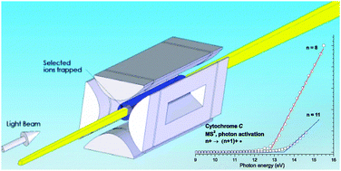
- 37. «Atmospheric Pressure Photoionization of Peptides» A. Bagag, A. Giuliani*, O. Laprévote, Int. J. Mass Spectrom. 299 (2011) 1-4. doi:10.1016/j.ijms.2010.08.010
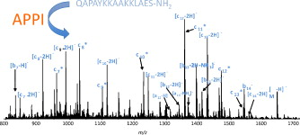
2010
- 36. «Structural study of acetogenins by tandem mass spectrometry under high and low collision energy» J. Allegrand, D. Touboul*, I. Schmitz-Afonso, V. Guerineau, A. Giuliani, J. Le Ven, P. Champy, O. Laprévote, Rapid Commun. Mass Spectrom. 24 (2010) 3602-3608. doi:10.1002/rcm.4805

- 35. «Synchrotron UV Fluorescence Microscopy Uncovers New Probes in Cells and Tissues» F. Jamme, S. Vilette, A. Giuliani, V. Rouam, F. Wien, B. Lagarde, M. Réfrégiers*, Microscopy and Microanalysis 16 (2010) 507-514. doi:10.1017/S1431927610093852
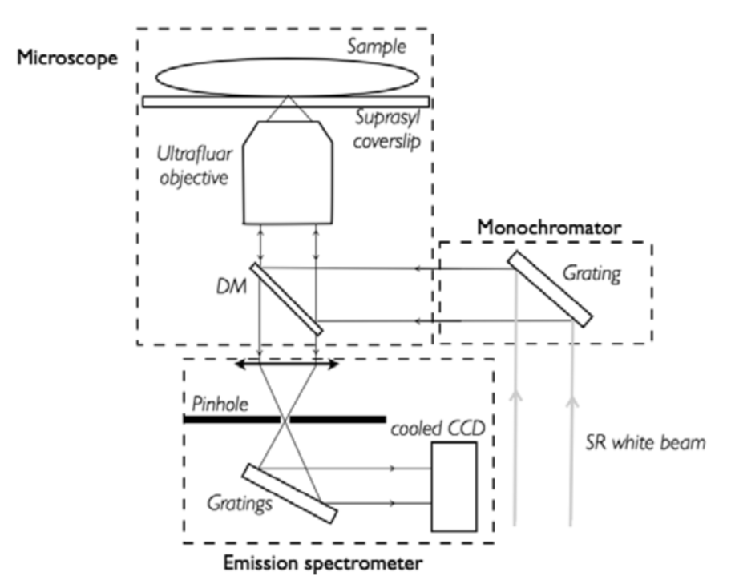
- 34. «Ability of a salivary intrinsically unstructured protein to bind different tannin targets revealed by mass spectrometry» F. Canon, A. Giuliani, F. Paté, P Sarni-Manchado, Anal. Bioanal. Chem. 398 (2010) 815-822. doi:10.1007/s00216-010-3997-9

2009
- 33. «Characterization, stoichiometry and stability of salivary protein-tannin complexes by ESI-MS and CID MS/MS» F. Canon, F. Paté, E. Meudec, T. Marlin,V. Cheynier, A. Giuliani, P Sarni-Manchado, Anal. Bioanal. Chem. 395 (2009) 2535-2545. doi:10.1007/s00216-009-3180-3
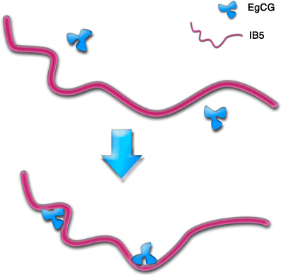
- 32. «Chemical characterization of Titan’s tholins: Solubility, morphology and molecular structure revisited» N. Carrasco*, I. Schmitz-Afonso, J-Y. Bonnet, E. Quirico, R. Thissen, O. Dutuit, A. Bagag, O. Laprevote, A. Buch, A. Giuliani, G. Adande, F. Ouni, E. Hadamcik, C. Szopa, G. Cernogora, J. Phys. Chem. A, 113 (2009) 11195-11203. doi:10.1021/jp904735q

- 31. «DISCO: a low energy multipurpose beamline at synchrotron SOLEIL» A. Giuliani, F. Jamme, V. Rouam, F. Wien, J.-L. Giorgetta, B. Lagarde, O. Chubar, S. Bac, I Yao, S. Rey, C. Herbeaux, J.-L. Marlats, D. Zerbib, F. Polack, M. Réfrégiers*, J. Synchrotron. Rad. 16 (2009) 1-7. doi:10.1107/S0909049509034049

- 30. «Electronic states of neutral and ionized tetrahydrofuran studied by VUV spectroscopy and ab initio calculations» A. Giuliani*, P. Limao-Vieira, D. Duflot, A.R. Milosavljevic, B.P. Marinkovic, S.V. Hoffmann, N. Mason, J. Delwiche, M.-J. Hubin-Franskin, Eur. J. Phys. D 51 (2009) 97. doi:10.1140/epjd/e2008-00154-7

2008
- 29. «Electronic excitation of gaseous acetic acid studied by K-shell electron energy loss spectroscopy and ab initio calculations» D. Duflot*, J.-P. Flament, A. Giuliani, J. Heinesch, M.-J. Hubin Franskin, Int. J. Mass Spectrom. 277 (2008) 70. doi:10.1016/j.ijms.2008.05.006
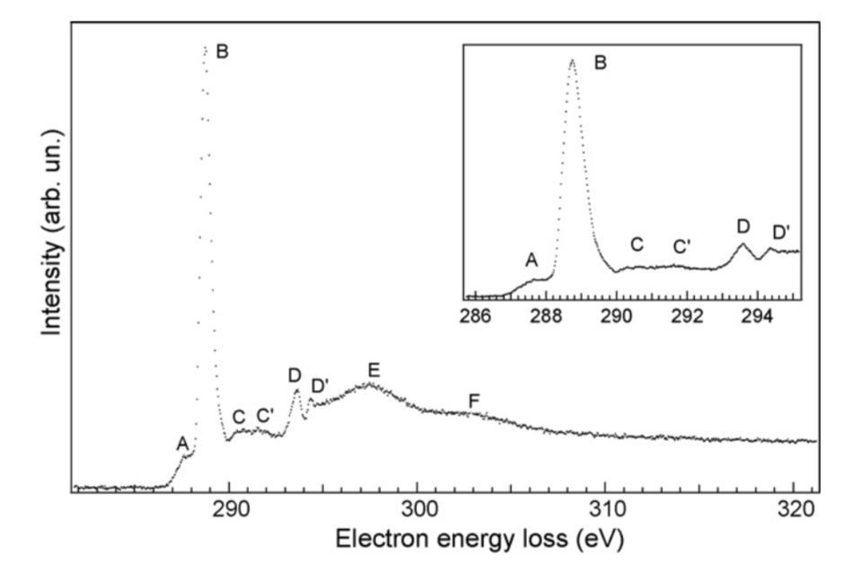
- 28. «Atmospheric pressure photoionization mass spectrometry of oligodeoxyribonucleotides» A. Bagag, A. Giuliani, O. Laprévote*, Eur. J. Mass Spectrom. 14 (2008) 71. doi:10.1255/ejms.913
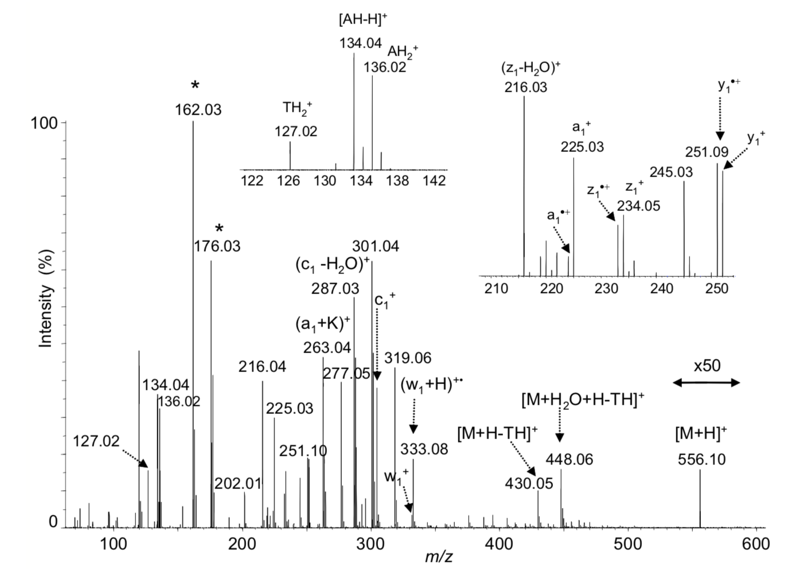
- 27. «Photoionization Cross Section of Xe+ Ion in the Pure 5p5 2P3/2 Ground Level» R. Thissen, J. M. Bizau, C. Blancard, M. Coreno, C. Dehon, P. Franceschi, A. Giuliani, J. Lemaire, C. Nicolas, Phys. Rev. Lett. 100 (2008) 223001. doi:10.1103/PhysRevLett.100.223001

- 26. «Electronic State Spectroscopy of c-C5F8 Explored by Photoabsorption, Electron Impact, Photoelectron Spectroscopies and Ab Initio Calculations» » P. Limao-Vieira*, D. Duflot, A. Giuliani, E. Vasekova, J.M.C. Lourenco, P.M. Santos, S.V. Hoffmann, N.J. Mason, J. Delwiche, M.-J. Hubin-Franskin J. Phys. Chem. A 112 (2008) 2782. doi:10.1021/jp7107939

2007
- 25. «Perfluorocyclobutane electronic state spectroscopy by high-resolution vacuum ultraviolet photoabsorption, electron impact, HeI photoelectron spectroscopy, and ab initio calculations» P. Limao-Vieira*, E. Vasekova, A. Giuliani, J.M.C. Lourenco, P.M. Santos, D. Duflot, S.V. Hoffmann, N.J. Mason, J. Delwiche, M.-J. Hubin-Franskin, Phys. Rev. A 76 (2007) 032509. doi:10.1103/PhysRevA.76.032509
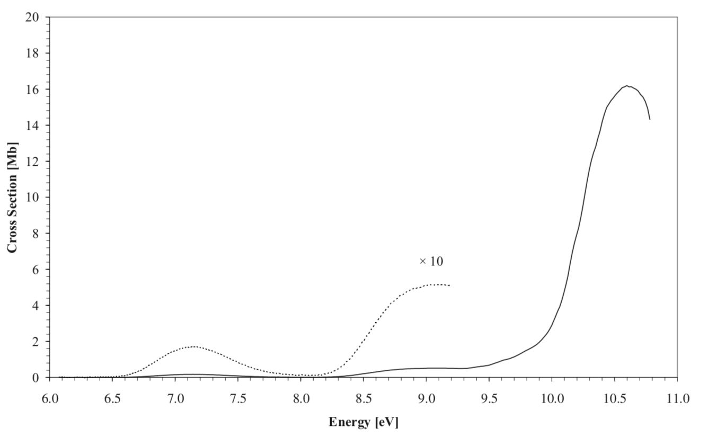
- 24. «C 1s and N 1s core excitation of aniline: Experiment by electron impact and ab initio calculations» D. Duflot, J.-P. Flament, A. Giuliani, J. Heinesch, M. Grogna, M.-J. Hubin-Franskin, Phys. Rev. A 75 (2007) 052719. doi:10.1103/PhysRevA.75.052719

- 23. «Atmospheric pressure photoionization mass spectrometry of nucleic bases, ribonucleosides and ribonucleotides» A. Bagag, A. Giuliani, O. Laprevote*, Int. J. Mass Spectrom. 264 (2007) 1. doi:10.1016/j.ijms.2007.03.010

2006
- 22. «Fragmentation induced in atmospheric pressure photoionization of peptides» D. Debois, A. Giuliani*, O. Laprévote, J. Mass. Spectrom. 41 (2006) 1554. doi:10.1002/jms.1122

- 21. «Electronic structure of hexafluorobenzene by high-resolution vacuum ultraviolet photo-absorption and He(I) photoelectron spectroscopy» C. Motch, A. Giuliani, J. Delwiche , P. Limão-Vieira, N.J. Mason, S.V. Hoffmann, M.-J. Hubin-Franskin*, Chem. Phys. 32 (2006) 183-189. doi:10.1016/j.chemphys.2006.05.032

- 20. «Study of a bisquaternary ammonium salt by atmospheric pressure photoionization mass spectrometry» A. Giuliani*, D. Debois, O. Laprévote, Eur. J. Mass Spectrom. 12 (2006) 189-197. doi:10.1255/ejms.803
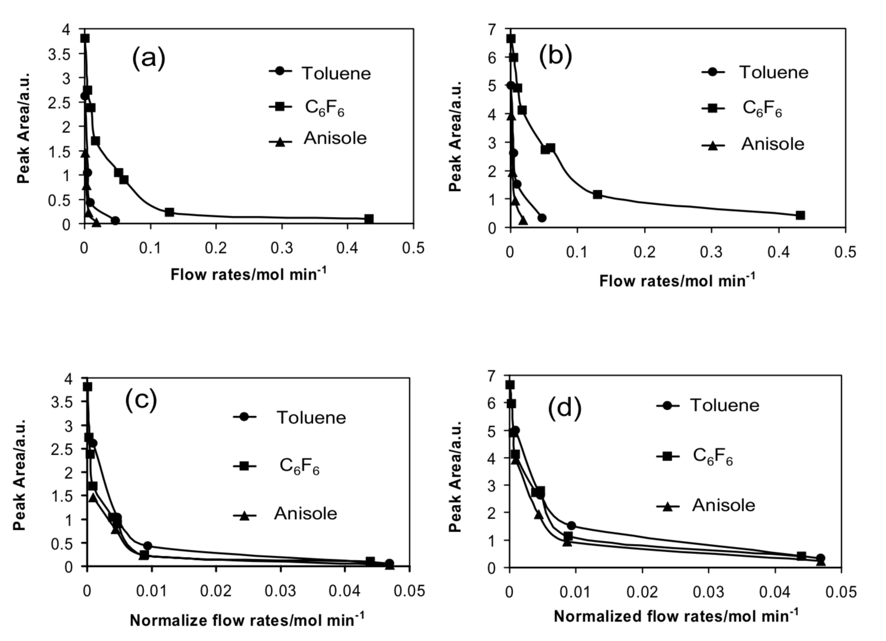
- 19. «Acetic acid electronic state pectroscopy by high-resolution vacuum ultraviolet photo-absorption, electron impact, He(I) photoelectron spectroscopy and ab initio calculations » P. Limão-Vieira*, A. Giuliani, J. Delwiche, R. Parafita, R. Mota, D. Duflot, J.-P. Flament, E. Drage, P. Cahillane, N.J. Mason, S.V.Hoffmann, M.-J. Hubin-Franskin, Chem. Phys. 324 (2006) 339-349. doi:10.1016/j.chemphys.2005.10.032
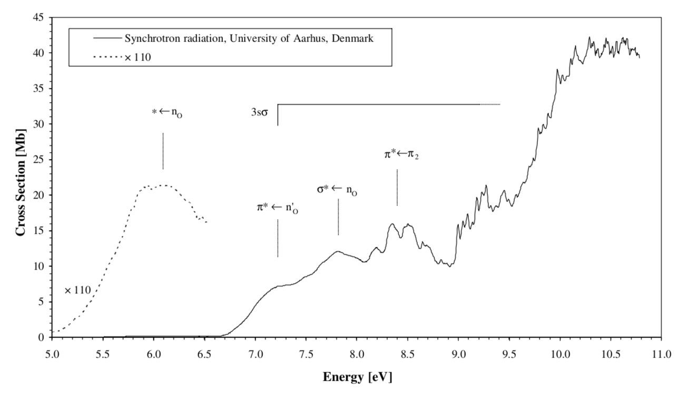
2005
- 18. «Ab initio and experimental study of the K-shell spectra of s-triazine» D. Duflot*, K. Sidhoum, J.-P. Flament, A. Giuliani, J. Heinesch, M.-J. Hubin-Franskin, Eur. J. Phys. D 35 (2005) 239-248. doi:10.1140/epjd/e2005-00193-6

- 17. «Water VUV electronic state spectroscopy by synchrotron radiation» R. Mota, R. Parafita, A. Giuliani, M.-J. Hubin-Franskin , J.M.C. Lourenço¸ G. Garcia, S.V. Hoffmann, N.J. Mason, P.A. Ribeiro,M. Raposo, P. Limão-Vieira*, Chem. Phys. Lett. 416 (2005) 152-159. doi:10.1016/j.cplett.2005.09.073

- 16. «Elastic scattering of electrons from tetrahydrofuran molecule» A. R. Milosavljevic, A. Giuliani, D. Sevic, M.-J. Hubin-Franskin, B. P. Marinkovic*, Eur. J. Phys. D 35 (2005) 411-416. doi:10.1140/epjd/e2005-00191-8
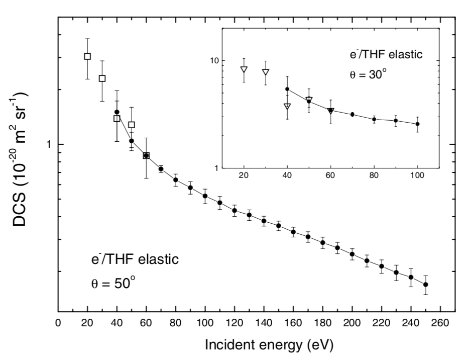
- 15. «Ab initio and experimental study of the K-shell spectra of 2,5-dihydrofuran» D. Duflot*, J.-P. Flament, A. Giuliani, J. Heinesch, M.-J. Hubin-Franskin, Chem. Phys. 310 (2005) 67-75. doi:10.1016/j.chemphys.2004.10.007

2004
- 14. «On the valence shell spectroscopy of 2-vinyl furan» A. Giuliani, I. C. Walker, J. Delwiche, S. Hoffmann, P. Limão-Vieira, N. J. Mason, C. Kech, M.-J. Hubin-Franskin*, J. Chem. Phys. 120 (2004) 10972-10982. doi:10.1063/1.1738642
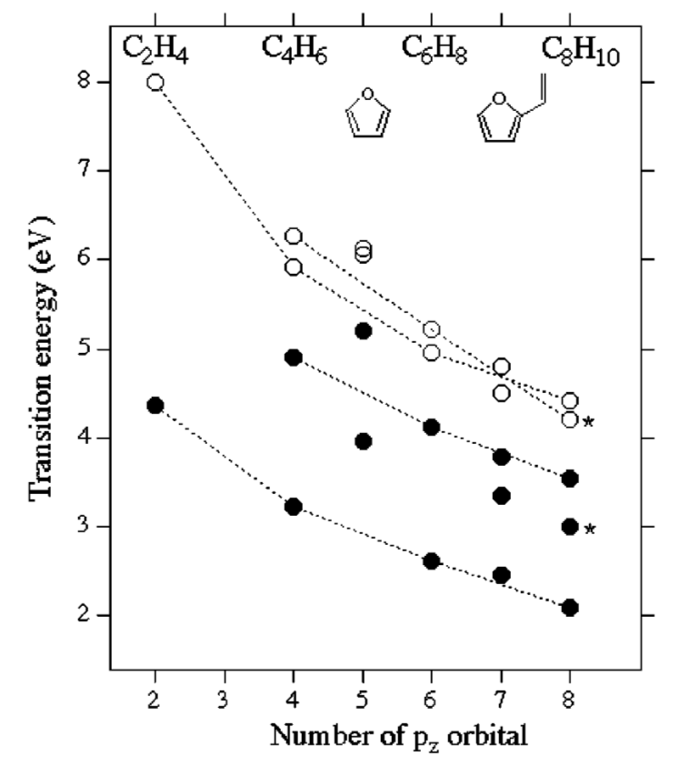
- 13. «An experimental study of SF5CF3 by electron energy loss spectroscopy, VUV photo-absorption and photoelectron spectroscopy» P. Limão-Vieira*, S. Eden, P. A. Kendall, N. J. Mason, A. Giuliani, J. Heinesch, M. -J. Hubin-Franskin, J. Delwiche, S. V. Hoffmann, Int. J. Mass. Spectrom. 233 (2004) 335-341. doi:10.1016/j.ijms.2004.01.008
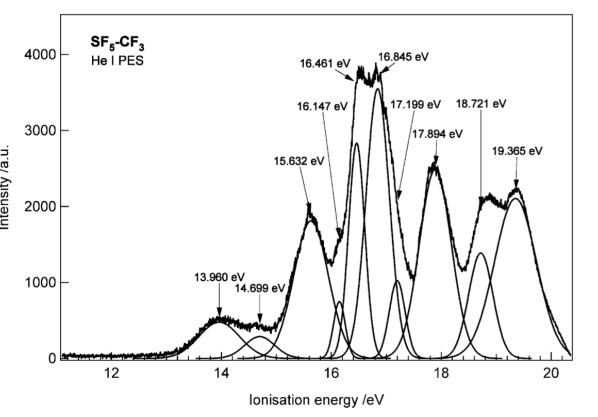
- 12. «The electronic states of isoxazole studied by VUV absorption, electron energy loss spectroscopies and ab initio multi-reference configuration interaction calculations» I. C. Walker*, M. H. Palmer, J. Delwiche, S. V. Hoffmann, P. Limao-Vieira, N. J. Mason, M. F. Guest, M.-J. Hubin-Franskin, A. Giuliani, Chem. Phys. 297 (2004) 289-306. doi:10.1016/j.chemphys.2003.10.012
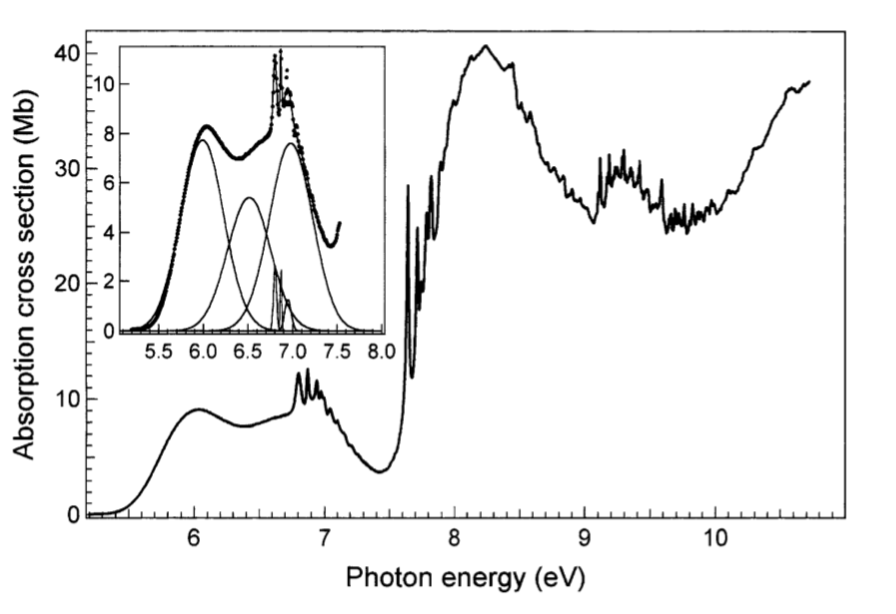
2003
- 11. «Core shell excitation of furan at the O 1s and C 1s edges: An experimental and ab initio study» D. Duflot, J.-P. Flament, A. Giuliani, J. Heinesch, M.-J. Hubin-Franskin, J. Chem. Phys. 119 (2003) 8946-8955. doi:10.1063/1.1606441

- 10. /«Molecular structure and vibrational analysis of 2-vinyl furan » A. Giuliani, B. Gilbert, C. Kech, M.-J. Hubin-Franskin*, Chem. Phys. Lett. 379 (2003) 406–411. doi:10.1016/j.cplett.2003.08.063

- 9. «The electronic states of 2-furanmethanol (furfuryl alcohol) studied by photon absorption and electron impact spectroscopies» A. Giuliani, I. C. Walker, J. Delwiche, S. Hoffmann, P. Limão-Vieira, N. J. Mason, B. Heyne, M. Hoebeke, M.-J. Hubin-Franskin*, J. Chem. Phys. 119 (2003) 7282-7288. doi:10.1063/1.1603733

- 8. «2-methyl furan: an experimental study of the excited electronic levels by electron energy loss spectroscopy, VUV photoabsorption and photoelectron spectroscopy» A. Giuliani, J. Delwiche, S. Hoffmann, P. Limão-Vieira, N. J. Mason, M.-J Hubin-Franskin*, J. Chem. Phys. 119 (2003) 3670-3680. doi:10.1063/1.1590960

- 7. «Electron and photon induced processes in SF5CF3» P. Limão-Vieira*, P. A. Kendall, S. Eden, N. J. Mason, J. Heinesch, M.-J. Hubin-Franskin, J. Delwiche, A. Giuliani, Radiat. Phys. Chem. 68 (2003) 193-197. doi:10.1016/S0969-806X(03)00279-2

- 6. «Thiazyl chloride: an experimental and theoretical study of the valence shell HeI photoelectron spectrum» D. Duflot, N. Chabert, J.-P. Flament, J.-M . Robbe, I. C. Walker, J. H. Cameron, A. Giuliani, J.-M. Hubin-Franskin, J. Delwiche*, Chem. Phys. 288 (2003) 95-104. doi:10.1016/S0301-0104(02)00966-7

2002
- 5. «Electronic excitation and optical cross sections of methylamine and ethylamine in the UV-VUV spectral region» M.-J. Hubin-Franskin*, J. Delwiche, A. Giuliani, M.-P. Ska, F. Motte-Tollet, I. C. Walker, N. J. Mason, J. M. Gingell, N. C. Jones, J. Chem. Phys. 116 (2002) 9261-9268. doi:10.1063/1.1473820
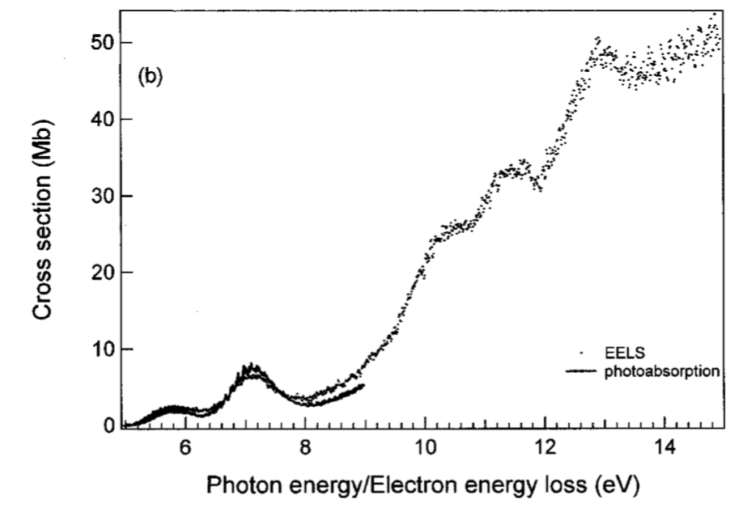
2001
- 4. «Spectroscopic study of the lowest energy triplet states of 2-methyl furan» A. Giuliani, M.-J. Hubin-Franskin*, Chem. Phys. Lett. 348 (2001) 34-38. doi:10.1016/S0009-2614(01)01082-X

- 3. «Lowest energy triplet states of furan, studied by high resolution electron energy loss spectroscopy» A. Giuliani, M.-J. Hubin-Franskin*, Int. J. Mass. Spectrom. 205 (2001) 163-169. doi:10.1016/S1387-3806(00)00318-3
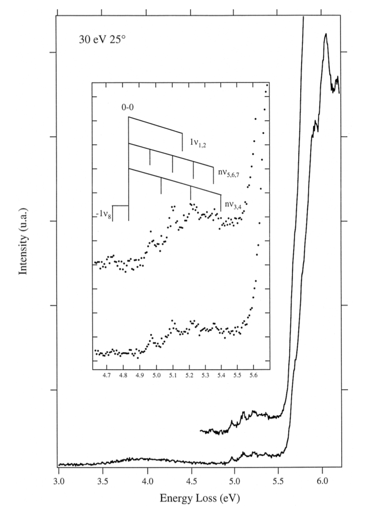
2000
- 2. «Electronic excitation and oscillator strength of ethyl bromide by vacuum ultraviolet photoabsorption and electron energy loss spectroscopy» A. Giuliani, F. Motte-Tollet, J. Delwiche, N.J. Mason, N. C. Jones, J. M. Gingell, I. C. Walker, M.-J. Hubin-Franskin*, J. Chem. Phys. 112 (2000) 6285-6292. doi:10.1063/1.481273

1999
- 1. «Electronic excitation and oscillator strength of ethyl iodide by vacuum ultraviolet photoabsorption and electron energy loss spectroscopy» A. Giuliani, F. Motte-Tollet, J. Delwiche, J. Heinesch, N. J. Mason, N. C. Jones, J. M. Gingell, I. C. Walker, M.-J. Hubin-Franskin*, J. Chem. Phys. 110 (1999) 10307-10315. doi:10.1063/1.478964

Proceedings
2015
- 10. «Photon activation of peptides in the VUV» A. Giuliani, A.R. Milosavljević, J. Phys. Conf. Ser. 635 (2015) 012032. doi:10.1088/1742-6596/635/1/012032
- 9. «Photodissociation of protonated Leucine-Enkephalin peptide in the VUV range» M. Lj Ranković, V. Cerovski, F. Canon, L. Nahon, A. Giuliani, A.R. Milosavljević, J. Phys. Conf. Ser. 635 (2015) 112030
2013
- 8. «DUV cleaning of aluminum optics left at the atmosphere» V. Rouam, F. Jamme, A. Giuliani, B. Lagarde, S. Rey, J.-P. Duval, M. Refregiers, J. Phys. Conf. Ser. 425 (2013) 122005. doi:10.1088/1742-6596/425/12/122005
- 7. «Synchrotron infrared confocal microscope: Application to infrared 3D spectral imaging» F. Jamme, B. Lagarde, A. Giuliani, G. A. Garcia, L. Mercury, J. Phys. Conf. Ser. 425 (2013) 142002. doi:10.1088/1742-6596/425/14/142002
- 6. «Application of VUV synchrotron radiation to proteomic and analytical mass spectrometry» A. Giuliani, A. R. Milosavljevic, F. Canon, L. Nahon, M. Réfrégiers, J. Phys. Conf. Ser. 425 (2013) 122001. doi:10.1088/1742-6596/425/12/122001
- 5. «Photochemistry simulation of planetary atmosphere using synchrotron radiation at soleil. Application to Titan’s atmosphere» T. Gautier, Z. Peng, A. Giuliani, N. Carrasco, G. Cernogova, A. Mahjoub, J.-J. Correira, C. Szopa, P. Pernot, A. Buch, Y. Benilan, EAS Publications Series 58 (2013) 199–203. doi:10.1051/eas/1258031
2012
- 4. «Photoionization of atomic and molecular positively charged ions» J.-M.Bizau, D. Cubaynes, M. M. A. Shorman, S. Guilbaud, C. Blancard, J. Lemaire, R. Thissen, A. Giuliani, C. Nicolas, A. R. Milosavljević, J. Phys. Conf. Ser. 399 (2012) 012002. doi:10.1088/1742-6596/399/1/012002
2011
- 3. «Performances and reliability tests of AlGaN based focal plane array for deep-UV imaging» J.-L. Reverchon, G. Lehoucq, C. Lyoret, J.-P. Truffer, E. Costard, E. Frayssinet, D. Brault, J.-Y. Duboz, A. Giuliani, M. Refregiers, M. Idir, Proc. SPIE 8176 (2011) 817619. doi:10.1117/12.898341
2010
- 2. «Performances of AlGaN-based focal plane arrays from 10nm to 200nm» J.-L. Reverchon, S. Bansropun, J.-P. Truffer, and E. Costard, E. Frayssinet, J. Brault, and J.-Y. Duboz , A. Giuliani, M. Idir, Proc. SPIE 7691 (2010) 769109. doi:10.1117/12.853947
- 1. «Gas-phase spectroscopy of a protein» A. R. Milosavljevic , A. Giuliani, C. Nicolas, J.-F. Gil, J. Lemaire, M. Refregiers, L. Nahon, J. Phys. Conf. Series 257 (2010) 012006. doi:10.1088/1742-6596/257/1/012006
Patents
2014
2013
Book Chapters
2016
- 2. Aleksandar Milosavljevic, Alexandre Giuliani, Christophe Nicolas «Chapter 8: Gas-Phase Near-Edge X-ray Absorption Fine Structure (NEXAFS) Spectroscopy of Nanoparticles, Biopolymers and Ionic Species» in X-ray and Neutron Techniques for Nanomaterials Characterization, Challa S.S.R. Kumar(Ed), Springer, 2016, ISBN 978-3-662-48604-7


Oral communications
2018
- 37. «Gas phase activation and spectroscopy of mass and charge selected ions», A. Giuliani, S. Douix, A. M. Milosavljević, F. Canon, L. Nahon, Photon Tools for Physical Chemistry, Beatenberg, Swistzerland, 8 - 11 January 2019 Invited
- 36. «Electron impact activation of isolated ions in a linear ion trap», A. Giuliani, Low-energy electrons: Lithography, Imaging, and Soft Matter, Amsterdam, The Nederlands, 12 & 13 November 2018. Invited
2017
- 35. «Ultraviolet activation of peptides using a tunable photon source», A. Giuliani, Annual Conference of the American Society for Mass Spectrometry, Indianapolis, USA, 4-8/06/2017.
- 34. «Spectroscopy of ions stored in traps», A. Giuliani International Workshop on Photoionization & Resonant Inelastic X-ray Scattering, Aussois, France, 26-31/03/2017. Invited
2016
2015
- 32. «Ultraviolet photon activation of peptides ions: what can we learn from spectroscopy», A. Giuliani, Congrès français de Spectrométrie de Masse et d'Analyse Protéomique (SMAP), Ajaccio, 15-18/09/2015
- 31. «ESI-Mass spectroscopy of proteins and large biomolecules», A. Giuliani, L. Nahon, M. Refregiers, A. R. Milosavljević, XXIX International Conference on Photonic, Electronic and Atomic Collisions (ICPEAC), Toledo, Spain, 22-28/07/2015 Progress_report
- 30. /«L’activation d’ion dans l’extrême UV : une nouvelle méthode pour la spectrométrie de masse tandem », A. Giuliani, Congrès Instrumenter Innover en Chimie Physique, UPMC, Paris, France, 22-23/01/2015
- 29. «Photon activation studies of biological ions», A. Giuliani, Molecular Physics Workshop, Caen, 7-10 July 2015 Invited
- 28. «Photon activation of biological ions stored in a linear ion trap using synchrotron radiation» A. Giuliani, 6th International Workshop on Electrostatic Storage Devices, Tokyo, Japan, 8-11/06/2015 Invited
2014
- 27. «Extreme ultraviolet activation and fragmentation of peptide and protein ions», A. Giuliani, 19th International Mass Spectrometry Conference (IMSC), Geneva (CH), 24-29/08/2014
- 26. «Spectroscopie électronique d'action de polypeptides isolés en phase gazeuse», A. Giuliani, Colloque commun de la division de Physique Atomique et Moléculaire et Optique de la SFP et des Journée de Spectroscopie Moléculaire, Reims, FR, 07-10/07/2014. Plenary
- 25. «Profilage métabolique avec les rayons X de Metrologie», A. Giuliani, Journée Prospectives des Sections Scientifiques, Synchrotron SOLEIL, 15 /01/2014.
- 24. «Spectroscopie électronique dans le VUV d’ions isolés en phase gazeuse», A. Giuliani, Workshop Simulation, SOLEIL, France, 02/04/2014 Invited
- 23. «Action spectroscopy of biological ions», A. Giuliani, SOLEIL User’s Meeting, 23-24 /01/2014. Invited
2012
- 22. «Ionization energy of gas phase proteins and its dependence on charge state and structure», A. Giuliani, 19th International Mass Spectrometry Conference (IMSC), Kyoto (JP), 15-21/09/2012.
- 21. «Application of VUV synchrotron radiation in analytical mass spectrometry», A. Giuliani, 11th Conference on Synchrotron Radiation (SRI), Lyon (FR), 9-13/07:2012.
2011
2010
2009
- 18. «Photodetachement dans le VUV de polyanions isolés en phase gazeuse par absorption du rayonnement synchrotron» A. Giuliani, Congrès général de la Société Française de Physique, Ecole Polytechnique Palaiseau, (FR), 6-10/07/2009.
- 17. «Energy dependent VUV Photodetachment spectroscopy of polyanions in the gas phase probed by synchrotron radiation», A. Giuliani, Annual Conference of the American Society for Mass Spectrometry, Philadelphie (USA), 31/05-04/06/2009.
- 16. «Spectroscopie VUV d'ions en phase gazeuse», A. Giuliani, Journée Sciences et Techniques Soleil, Synchrotron Soleil, Gif/Yvette (FR), 6/06/2009. Invited
2008
- 15. «Coupling of a fourrier transform mass spectrometer with a VUV beamline : new results on the photoionisation of atomic and molecular ions», CEAMMP, Belgrade, Serbie, 15-18/052008. Invited
- 14. «Low energy electron interactions with a model peptide», A. Giuliani, A. Bagag, M. Bertin, I. Martin, L. Amiaud, A. Lafosse, R. Azria, LEEMI-EIPAM-ECCL’08 joint meeting, Roscoff, (FR), 05/2008. Invited
2007
2006
- 12. «DISCO, a UV beamline dedicated to biology», A. Giuliani, M. Refregiers, Réunion du groupe de Contact FNRS Rayonnement synchrotron, Mons (BE), 11/2006. Invited
- 11. «Mass spectrometry using synchrotron radiation : applications in bio-medicine», A. Giuliani, Signature du Mémorandum of Understanding Diamond-SOLEIL, Résidence de l’ambassadeur de Grande Bretagne, Paris (FR), 30/06/2006.
- 10. «Atmospheric pressure photoionisation of biomolecules studied by mass spectrometry», A. Giuliani, Biology and Medicine with Low Energy Synchrotron Radiation, Institute for Storage Rings annual user’s meeting, Aarhus (DK), 10/2006. Invited
- 9. «Ion formation mechanisms in atmospheric pressure photoionization of biomolecules», A. Giuliani, O. Laprévote, Informal Meetings in Mass Spectrometry , Ustron (PL), 13-19/05/2006.
- 8. «Mass spectrometric study of atmospheric pressure photoionisation of peptides», A. Giuliani, COST P9 meeting, Lisbonne (PO), 23-26/02/2006.
- 7. «Atmospheric pressure photoionization», A. Giuliani, User’s meeting SOLEIL, Orsay (FR) 18-19/01/2006.
- 6. «Photoionisation at atmospheric pressure of biomolecules», A. Giuliani, Electron Induced Processes At the Molecular Level (EIPAM) annual conference, Valetta, Malta, 2006. Invited
2004
2002
2001
2000
Posters
2018
- 18. «Electron Induced Dissociation in Linear Ion Trap Using High Energy Electrons», Annual Conference of the American Society for Mass Spectrometry, San Diego, 3-7/06/2018
- 17. «Extreme ultraviolet radiation: a means of ion activation for tandem mass spectrometry», European Mass Spectrometry Conference, Saarbrücken, Germany, 11-15/03/2018
2016
- 16. «Electron induced activation: a mean for inner shell spectroscopy of ions», International Mass Spectrometry Conference (IMSC), Toronto, 20-26/08/2016.
- 15. «Characterization of small molecules using Laser-Induced Acoustic Desorption (LIAD)», International Mass Spectrometry Conference (IMSC), Toronto, 20-26/08/2016.
2012
2011
- 13. «Photochemistry simulation of the Titan atmosphere», 1st European Conference on Laboratory Astrophysics, Paris (FR), 26-30/09/2011.
- 12. «Coupling of a linear ion trap with a vacuum-ultraviolet beamline» Congrès de Spectrométrie de Masse et d’Analyse Protéomique (SMAP), Avignon (FR), 19-22 /09/2011
2008
- 11. «Photodetachment of polyanions in the gas phase by absorption of VUV synchrotron radiation», Soleil User’s Meeting, Palaizeau (FR), 01/2008.
- 10. «First-time efficient coupling of an FT-ICR Ion Trap to a VUV beamline: new results on photoionization of Xe+ ion», Soleil User’s Meeting, Palaiseau (FR), 17-18/01/2008.
2007
2006
2005
- 5. «Etude par photoionisation à pression atmosphérique d’un sel de diammonium quaternaire», 1er Symposium de Chimie et Biologie Analytique, Montpelier (FR), 26-29/09/2005.
- 4. «Atmospheric Pressure Photoionization-Mass Spectrometry :Study of radical reactions in the gas phase», 53th American Society for Mass Spectrometry Conference, San Antonio (USA) ,4-9/06/2005.
- 3. «Atmospheric Pressure Photoionization-Mass Spectrometry», Symposium High Resolution & Synchrotron Soleil, Orsay (FR), 21-22/04/2005.
2004
Fundings
2015-2018 DIM Analytics PhD grant - Analysis and detection of long-chain per-and hydrofluorocarbons
Abstract
«Perfluorocarbons (CxFy, PFCs) and hydrofluorocarbons (CxHyFz, HFCs) are very potent greenhouse gases released in the Earth atmosphere. They have very long lifetime and one of their unique sink is the solar radiation when they reach the upper atmosphere. Although identified as a source of climate change and already quite well quantified in the atmosphere, their chemical characterization suffers from a lack of experimental techniques for the largest analogue compounds (with a carbon number > 5) because of their particular physico-chemical properties (high molecular weight, low polarizability,..). We propose here a project for a PhD fellowship aiming at the characterization of long chain PFCs and HFCs. Two research axes will be developed. First, the analysis of the compounds using an atmospheric pressure photoionization (APPI) source coupled to a high-resolution Orbitrap mass analyzer will lead to high-resolved mass spectra which have never been obtained so far. Then, we will perform the coupling of a laser-induced acoustic desorption (LIAD) setup with synchrotron radiation (SR) in a commercial linear quadrupole ion trap mass spectrometer. This worldwide-unique setup will enable to softly bring neutral molecules into the gas phase and then photoionize them using SR in a wide energy range (5-20 eV). We will thus be able the study the effect of radiation on the compounds of interest, in particular their degradation processes. Additional APPI/SR experiments will also been performed in order to compare them with LIAD/SR results and determine the effect of solvent in APPI. Finally, the experimental work will be completed with density-functional theory (DFT) based molecular simulations to help for the analysis of the results.»
People
Thesis director: Alexandre Giuliani Co-director: Héloïse Dossmann, Sorbonne University, Paris.
Funding
120 k€
Outcomes
- PhD thesis of Suzie Douix.
- 2 publications: J. Phys. Chem. Lett., Chem. A European Journal.
- 5 oral communications: 1 communications at the conference of the American Society for Mass Spectrometry, 1 communications at the International Mass Spectrometry Conference.
- 6 posters: 2 posters at the conference of the American Society for Mass Spectrometry.
2015-2015 Prematuration Paris-Saclay - Activation of ions using extreme ultraviolet: a new method for tandem mass spectrometry of biological molecules
Abstract
«This project deals with the development of a new ion activation method for tandem mass spectrometry with applications in structural analysis.»
People
Principal investigator: Alexandre Giuliani
Funding
45 k€
Outcome:
- 1 publication in Anal. Chem.
- 1 poster at the European Mass Spectrometry Conference in Saarbrücken, 2018.
2009-2011 ANR (white program) - Synchrotron radiation for tandem mass spectrometry (SRMS2)
Abstract
«The aim of the project is to explore the potential of synchrotron radiation for tandem mass spectrometry and ion spectroscopy. For this a commercial ion trap is coupled with synchrotron radiation beamlines in the vacuum ultraviolet (VUV). Ions produced by electrospray of various biomolecules will be probed.»
People
Principal Investigator: Alexandre Giuliani, INRA Nantes. Partners: Matthieu Refregiers, Laurent Nahon, SOLEIL. Postdoctoral fellows: Aleksandar Milosavljević, Francis Canon.
Funding
440 k€
Outcome:
- 43 publications. 3 publications in Angew. Chem. Int. Ed. (53, 61, 62), 5 publications in J. Phys. Chem. Lett. (95, 86, 78, 69, 46, ), 2 publications in Anal. Chem. (100, 72), 2 publications in Analytica Chim. Acta. (87, 64), 4 publications in J. Am. Soc. Mass Spectrom. (99, 88, 59, 44) and 1 publication in Mass. Spectrom. Rev. (66)
- 20 oral communications (c37, c36, c35, c34, c33, c32, c31, c30, c29, c28, c27, c26, c24, c23, c22, c21, c20, c19, c18, c17, c16), among which 1 progress report at ICPEAC (c31), 2 communications at the conference of the American Society for Mass Spectrometry (c35, c17), 3 communications at the International Mass Spectrometry Conference (c33, c27, c22), 2 communications at the French Society for Mass Spectrometry (c32, c19), 1 communication at the International Workshop on Electrostatic Storage Devices (c28).
- 5 posters(p18, p17, 14, 12, p11). 1 poster at the Gordon Conference on Photonization and Photodetachment (p14), 1 posters at the conference of the American Society for Mass Spectrometry (p18).
- 2 Book Chapters (c1, c2).
- 2 Patents (pat1, pat3).
2009-2010 CEPIA ANS - Action spectroscopy of ions
Abstract
«This project aims at exploring the potentialities of mass spectrometry to study the optical properties of stored ions. Especially, our approach aims at testing the possibility of performing magnetic circular dichroism (mCD) using Fourier transform ion cyclotron resonance (FTICR) mass spectrometry.»
People
Principal investigator: Alexandre Giuliani Partners: Hélène Rognaux, INRA, Nantes.
Funding
12 k€
Outcome:
Tests experiments.
2010-2012 CEPIA AIC - Oleosines, SOLEIL, Mapping Individuel Oxydation: OlSoleilMiox
Abstract
«Our aim is to develop a setup for radiolytic footprinting of proteins at SOLEIL to study the conformation of oleosine proteins.»
People
Principal investigator: Thierry Chardot, INRA, Versailles. Partners: Alexandre Giuliani.
Funding
12 k€
Outreach
2018
SOLEIL highlight about our collaborative publication entitled «Extreme ultraviolet (XUV) radiation: a means of ion activation for tandem mass spectrometry» in Anal. Chemistry.
SOLEIL highlight about our publication «Photoionization of the Buckminsterfullerene Cation» in J. Phys. Chem. Lett.
2015
SOLEIL and INRA (in french) highlights about our publication «High-energy photon activation tandem mass spectrometry provides unprecedented insights into the structure of highly sulfated oligosaccharides extracted from macroalgal cell walls» in Analytical Chemistry.
SOLEIL highlight on our collaborative work entitled «Gas-phase VUV Photoionisation and Photofragmentation of the Silver Deuteride Nanocluster [Ag10D8L6]2+ (L = bis(diphenylphosphino)methane). A Joint Experimental and Theoretical Study» in Phys. Chem. Chem. Phys.
2013
Press release from INRA, CNRS, associated with publication entitled «Photodissociation and Dissociative Photoionization Mass Spectrometry of Proteins and Noncovalent Protein-Ligand Complexes» in Angewandte Chemie Int. Ed.
Cover of Angewandte Chemie Int. Ed. associated with our publication entitled «Photodissociation and Dissociative Photoionization Mass Spectrometry of Proteins and Noncovalent Protein-Ligand Complexes»
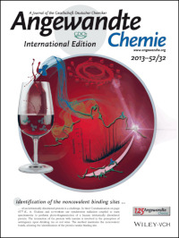
2012
SOLEIL highlight about publication «Nanosolvation-Induced Stabilization of a Protonated Peptide Dimer Isolated in the Gas Phase» in Angewandte Chemie Int. Ed.
SOLEIL highlight about our publication entitled «Structure and Charge-State Dependence of the Gas-Phase Ionization Energy of Proteins» in Angewandte Chemie Int. Ed.
2011
SOLEIL highlight about publication «Valence shell direct double photodetachment in polyanions» in New J. Phys.
SOLEIL highlight about our publication «A differential pumping system to deliver windowless VUV photons at atmospheric pressure» in J. Synchrotron Rad.
2010
SOLEIL highlight associated to publication «Characterization, stoichiometry and stability of salivary protein-tannin complexes by ESI-MS and CID MS/MS» in in J. Synchrotron Rad.
TODO News news
…
Footnotes:
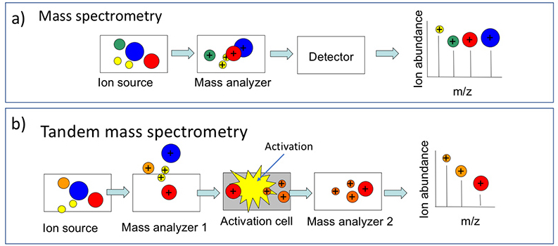
Figure 112: Illustration of the principles of a) mass spectrometry and b) tandem mass spectrometry analysis.

Figure 113: Photoionization cross section of the Xe+ cation measured using an ion trap (top) and the merged beams technique (bottom) are compared with theoretical results (thin lines), modified from [PRL 2008].

Figure 114: Scheme of principle of the coupling of the linear ion trap with three beamlines at SOLEIL.
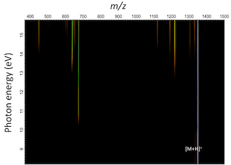
Figure 115: 2D representation of the activation of the single protonated ion [M+H]+ of substance P in the 8 to 16 eV, showing the production ion mass spectra as a funcion of the photon energy. More details are available here [PCCP 2015]
There is plenty of excellent resources on literate programming on the web. A non exhaustive list: https://academic.oup.com/comjnl/article/27/2/97/343244 http://kitchingroup.cheme.cmu.edu/blog/category/literate-programming/ http://www.cachestocaches.com/2018/6/org-literate-programming/ https://orgmode.org/worg/org-contrib/babel/how-to-use-Org-Babel-for-R.html